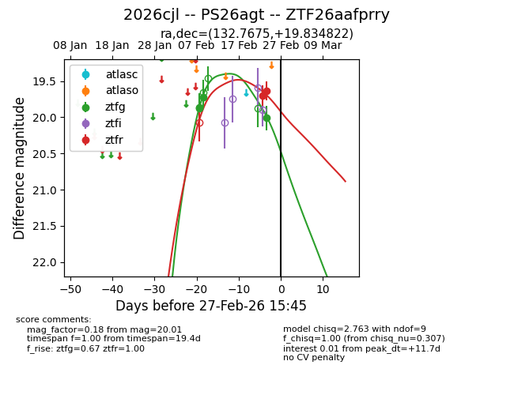
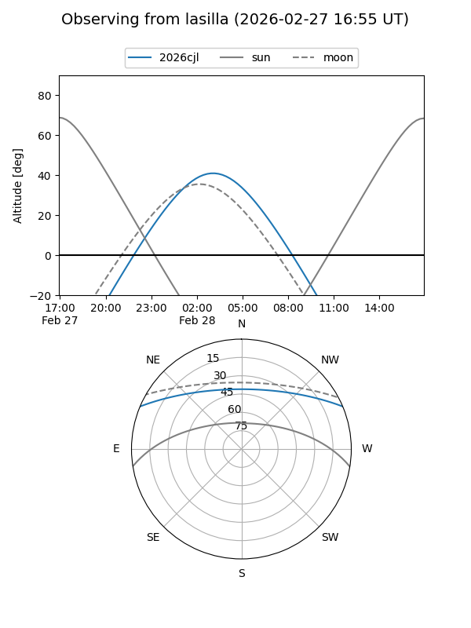
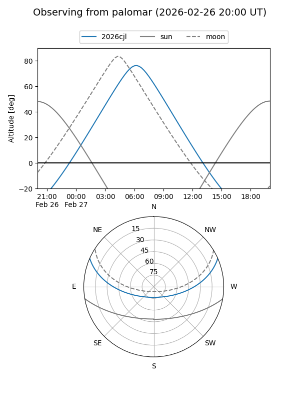
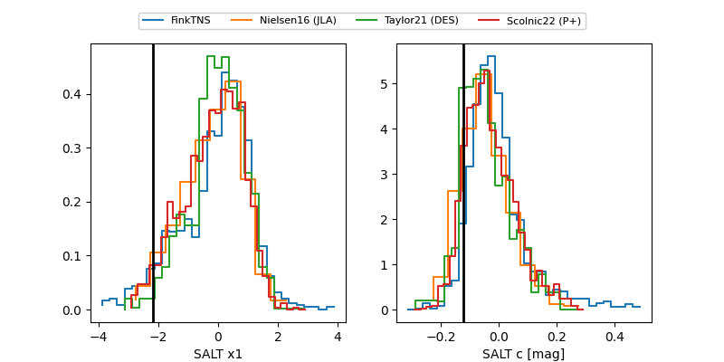

2026cjl
Target 2026cjl at 2026-02-27 15:48
Aliases and brokers:
FINK: link
Lasair: link
ALeRCE: link
TNS: link
YSE: link
alt names
ZTF26aafprry (ztf,fink_ztf)
2026cjl (tns,yse)
PS26agt (panstarrs)
Coordinates:
equatorial (ra, dec) = 132.7675,+19.83482
equatorial (HMS+DMS) = 08:51:04.20,+19:50:05.36
galactic (l, b) = (206.7645,+34.90027)
Flags:
Photometry:
last ztfg=20.01, ztfr=19.63
4 ztfg, 2 ztfr detections
Lightcurve

Visibility


Additional plots
